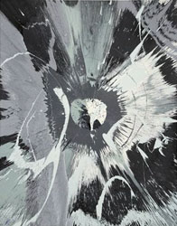

swirling (spin paintings)
An anonymous Wikipedia author attributes the invention of "spin art" to Eugene R. Pera, who made artworks by applying paint to a vertically mounted spinning canvas. He demonstrated this semi-automatic technique on the American tv shows What's My Line and I've Got a Secret in 1958 and 1959. The timing of the invention fits the art-historical moment which marks the "Death of Art" and the beginning of the new era of "Artificial Art". (At the same time in Paris, Jean Tinguely launched a mechanical approach to painting through his Metamatic machines. The first international museum show by painting monkeys had been launched at the London ICA in 1957, and toured the US in 1958. (After abstract expressionism and art informel had culminated in the gestural performances of Jackson Pollock and Georges Mathieu, the only well-motivated continuation of modern art was through automation and parody.))
Pera's work was foolishly ignored by the art museums and galleries, but the idea was picked up by professionals catering for children's entertainment through fairgrounds, hobby magazines, and television programs. A horizontal version of Pera's machine became fairly popular. Thus, in 1975, a nine year old Damien Hirst watched a "Patent Picture Painter" on the British tv show Blue Peter. Hirst: "I grew up with Blue Peter. I got my idea for the spin paintings from an episode in the 1970s. I never thought it was real art. I remember thinking: 'That's fun, whereas art is something more serious.' And then as I got older, I started thinking about Van Gogh and all those painters, and cutting your ear off when you're painting, and at that point I just thought: 'Why does it have to be like that?' I thought: 'No, actually, the better art is the art made with the spin machine.'" [The Guardian, 29 August 2012]
The Viennese painter Alfons Schilling independently reinvented Pera's method, building his first vertical rotator in 1961. In December of that year, after settling down in Paris, he started the production of a series of "Rotationsbilder". Initially, the rotator was operated at the modest speed of 1 revolution per second, which suffices to enhance the element of chance in manually produced action paintings. Soon, the speeds were increased, effectuating the centrifugal expulsion of the ego. Schilling (February 1962): "Ich habe meine Scheibe auf 50 Umdrehungen gesteigert. Ich weiss, ich weiss, das ist viel verhängnisvoller. Das ist genau der Punkt, wo man nur noch in allerhöchster Konzentration wahrnehmen kann was überhaupt da ist. Es ist fast zum verrückt werden, so toll. Ich wette fast es ist meine Flucht aus dem Abendland." [Klocker, 1997]
Around 1970, Annick Gendron (Paris) was the first to appropriate fairground-style spin painting as a technique to create postmodernist highbrow art. She was followed by Walter Robinson (New York) in the mid-eighties and Damien Hirst and Andy Shaw (London) in the early nineties. Hirst's auction prices made spin paintings more respectable than ever. In the first decade of the 21st century, they became increasingly ubiquitous in retro-modern interior design.
Remko Scha, December 2012
Alfons Schilling: Rotationsbilder (1962)


Annick Gendron
1970
1970
Walter Robinson
Intrigues and innumerable jealousies, 1985
The gaping mouth of hell, 1986
Paradigm, 1987
Damien Hirst

Beautiful where did all the
colours go painting, 1992
Beautiful exploding spinning
spiral drawing, 1993
Beautiful kiss my fucking
tits painting, 1996
Late 20th & early 21st century
Andy Shaw, 1996
Trevor Knapp: Untitled, 2008
Mark Chadwick, 2009
Abraham de la Torre:
Big Mouth Strikes Again, 2011
Mandii Pope:
Kiwi Fruit Burst Te Puke, 2011
Rose Popay & Nigel Oddy:
Gloss Spin, 2011